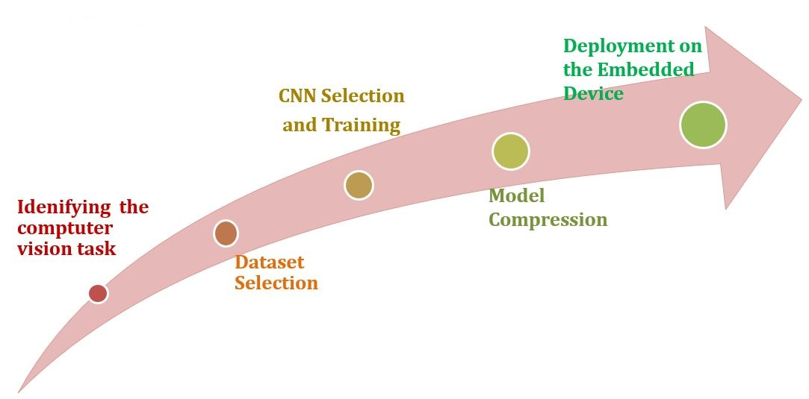
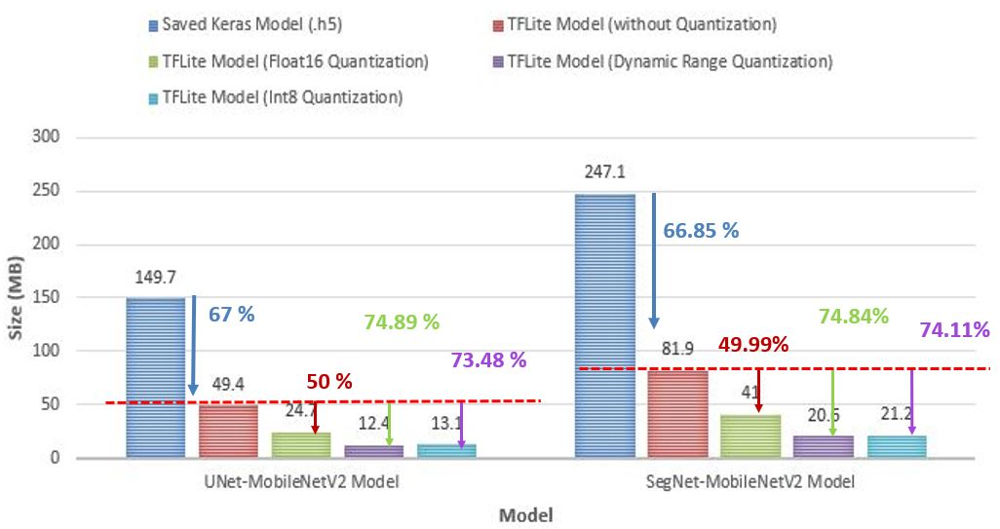

Embedded Deep Learning Semantic Segmentation
Created a vision-based environment surveying application using deep learning, specifically optimized to run efficiently on resource-constrained embedded devices.
System Workflow

Training Specifications
Task
Semantic Segmentation
Dataset
CamVid
Architecture
Encoder-Decoder
(UNet, SegNet)
Encoder
MobileNetV2
Optimization Strategy
Technique
Post-Training Quantization
Framework
TensorFlow Lite

Compression Results

Achieved significant reduction in model size with minimal loss in accuracy.
Live Inference using TFLite Interpreter

Real-time semantic segmentation running on embedded hardware